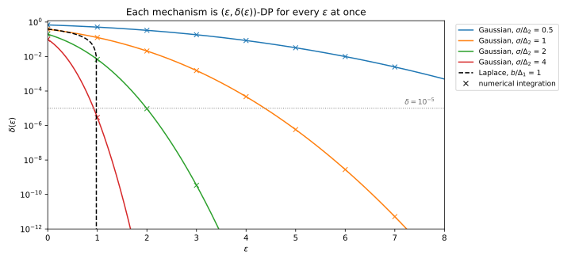
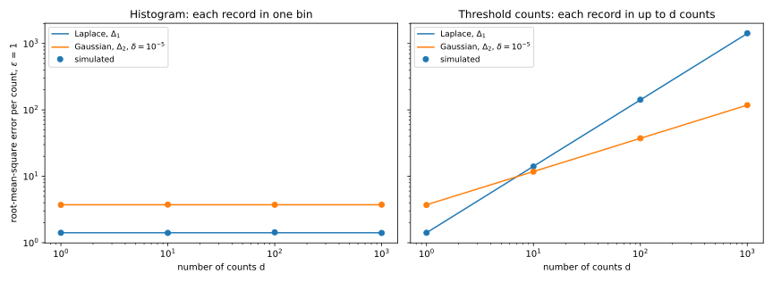

20 The Laplace and Gaussian mechanisms
20.1 Why this matters
You want to publish a statistic with a differential privacy (DP) guarantee: a count, a mean, a histogram, or a gradient during training. The definition of differential privacy says what the release must satisfy: on two neighbouring datasets \(D\) and \(D'\), which differ in one person’s record, every set \(S\) of outputs must have \(\Pr[M(D) \in S] \le e^\varepsilon \Pr[M(D') \in S] + \delta\). Almost every DP system builds such a release the same way: compute the exact answer \(f(D)\), add fresh random noise \(Z\), and publish \[M(D) = f(D) + Z. \tag{20.1}\]
The one idea of this chapter is what this does to the privacy loss, the log of how much more likely an output is under \(D\) than under \(D'\). On the two datasets the mechanism places the same noise around two different centres, \(f(D)\) and \(f(D')\). So the privacy loss is the log-ratio of the noise density and a copy of itself shifted by the change one record makes, and it depends on two things: how big that shift can be, and how the log of the noise density falls off. The Laplace density’s log falls off in a straight line, which bounds the loss everywhere and gives pure DP. The normal density’s log falls off like a parabola, which leaves the loss unbounded but large only on rare outputs, and gives \((\varepsilon, \delta)\)-DP. The sections follow the decisions in order: sensitivity, which noise, and how much.
20.2 Sensitivity
To hide one record, the noise must cover the largest change one record can make to the answer, its sensitivity. Because the guarantee must hold for every pair of neighbours, it is a worst case over every dataset the domain allows, not a property of your data. So you can compute it before looking at the data, but it can be infinite: a sum of unbounded numbers changes by as much as one record likes, so you must clip every value to a fixed range first.
For a vector of answers, the two noises measure a change differently. The \(\ell_1\) norm adds up the absolute changes over all coordinates; the \(\ell_2\) norm is their straight-line length, the square root of the sum of squares. The \(\ell_p\) sensitivity is the largest change between neighbours, \[\Delta_pf = \max_{D \simeq D'}\big\|f(D) - f(D')\big\|_p, \qquad p \in \{1, 2\}. \tag{20.2}\] The two agree when one record moves a single coordinate, and they are furthest apart when it moves all \(d\) coordinates by the same amount: a change of 1 in each of \(d\) coordinates has \(\ell_1\) norm \(d\) but \(\ell_2\) norm only \(\sqrt d\). That gap decides, in Section 20.5, which noise to use.
The answer also depends on what “differ in one record” means. Under add/remove one dataset has an extra record, so its size is private. Under replace one record is swapped for another, so the size \(n\) is fixed and public. Each entry of Table 20.1 is the effect of the single worst record. A histogram has sensitivity 1 under add/remove, because the new record raises one bin by 1, but 2 under replace, because the swapped record leaves one bin and joins another. The count of all records has sensitivity 0 under replace, because \(n\) never changes; if the size of your dataset is itself sensitive, use add/remove. And a record at the top of the range raises every one of \(d\) threshold counts, which makes that query dense.
| Query | Add/remove \(\Delta_1\) | Add/remove \(\Delta_2\) | Replace \(\Delta_1\) | Replace \(\Delta_2\) |
|---|---|---|---|---|
| Count \(\lvert D\rvert\) | 1 | 1 | 0 | 0 |
| Sum, records in \([0, B]\) | \(B\) | \(B\) | \(B\) | \(B\) |
| Mean, records in \([0, B]\), \(n\) public | — | — | \(B/n\) | \(B/n\) |
| Histogram with \(k\) bins | 1 | 1 | 2 | \(\sqrt2\) |
| \(d\) threshold counts \(\#\{x \ge j\}\), \(j = 1..d\) | \(d\) | \(\sqrt d\) | \(d\) | \(\sqrt d\) |
For example, a study releases the mean age of \(n = 1000\) patients, with ages clipped to \([0, 100]\), under replace neighbours. One patient’s age can move the sum by at most 100, and the mean by \(100/1000 = 0.1\): a tenth of a year, however old they are. Since the noise is proportional to the sensitivity, the same noise on a histogram gives an \(\varepsilon\) twice as large under replace, so always state the relation with \(\varepsilon\). Computing the sensitivity from your data, say from the largest value present, leaks information (Beyond global sensitivity).
20.3 The Laplace mechanism
The Laplace distribution \(\mathrm{Lap}(b)\) with scale \(b\) has density \(\frac1{2b}e^{-|z|/b}\), a two-sided exponential. Its log falls off in a straight line with slope \(1/b\) on each side, so sliding the density over by a distance \(\Delta\) changes its log at any point by at most \(\Delta/b\). Hence no output can be more than \(e^{\Delta/b}\) times as likely under one dataset as under its neighbour. With independent noise on \(d\) coordinates the log-ratios of the coordinates add, each bounded by its own shift divided by \(b\), so the total is bounded by the \(\ell_1\) norm of the shift. Setting the scale so that the worst shift gives exactly \(\varepsilon\), adding independent \(\mathrm{Lap}(b)\) noise to each coordinate with \[b = \frac{\Delta_1f}{\varepsilon} \tag{20.3}\] is \(\varepsilon\)-DP. No smaller scale works, and the worst case is not rare: for a count, every output below both true answers has privacy loss exactly \(\varepsilon\), and half the outputs land there (Figure 20.1, left).

The error is the noise itself: \(b\) on average in each coordinate. Its exponential tail puts one coordinate within \(b\ln(1/\beta)\) with probability \(1 - \beta\); giving each of \(d\) coordinates a failure probability of \(\beta/d\) puts all of them within \(b\ln(d/\beta)\). Say 1,234 of a hospital’s 10,000 patients have diabetes. Released with \(\varepsilon = 0.1\) under add/remove, the sensitivity is 1, so the noise is \(\mathrm{Lap}(10)\): the error is 10 on average and below \(10\ln 20 = 29.96\) with probability 0.95, a relative error of 2.4%. A histogram of diagnoses with 20 bins at \(\varepsilon = 1\) gets \(\mathrm{Lap}(1)\) in each bin, and every bin is within \(\ln(20/0.05) = 5.99\) of its true count with probability 0.95.
Notice what the scale does not contain: the size of the data. One record moves a count by 1 whether the database holds a hundred records or a hundred million, so the noise is the same, and the relative error of a count of \(n\) is about \(1/(n\varepsilon)\). Large populations are cheap to protect and small subgroups are expensive. The flip side is that the sensitivity must count every number one record can move: ten counts that each get \(\mathrm{Lap}(1/\varepsilon)\), and that one record can all change, have \(\Delta_1 = 10\) and form a \(10\varepsilon\)-DP release. Drawing the noise is another matter: textbook floating-point Laplace samplers break the guarantee through their low-order bits, as Discrete and floating-point-safe mechanisms shows, so use a vetted DP library rather than numpy.random.laplace.
20.4 The Gaussian mechanism
Gaussian noise, the other natural choice, is calibrated to the \(\ell_2\) sensitivity. Independent normal coordinates with equal variance look the same in every direction, so you can rotate the axes until the shift points along one of them; the other coordinates then carry no evidence, and only the shift’s straight-line length matters. The price is the parabola. The log of a normal density falls off like \(-z^2\), so the log-ratio of two shifted copies is a straight line in the output, and grows without limit far in the tail (Figure 20.1, right). Gaussian noise therefore cannot give pure DP. It gives \((\varepsilon, \delta)\)-DP, where \(\delta\) pays for the rare outputs whose loss exceeds \(\varepsilon\).
As the definition showed, \(\delta\) is not the probability of those outputs: only their excess over \(e^\varepsilon\) times their probability on the neighbour has to be paid for. For two normal distributions both terms are normal tail probabilities, which gives the exact answer in closed form (Balle & Wang 2018). Only the ratio \(\mu = \Delta_2f/\sigma\) enters, the number of noise standard deviations between the two answers, so doubling both the sensitivity and the noise changes nothing. Adding \(\mathcal N(0, \sigma^2)\) noise to each coordinate is \((\varepsilon, \delta)\)-DP exactly when \(\delta \ge \delta_\mu(\varepsilon)\), where \[\delta_\mu(\varepsilon) = \Phi\Big(\frac\mu2 - \frac\varepsilon\mu\Big) - e^\varepsilon\,\Phi\Big(-\frac\mu2 - \frac\varepsilon\mu\Big) \tag{20.4}\] and \(\Phi\) is the standard normal cumulative distribution function. The first term is the probability, on one dataset, of the outputs whose loss exceeds \(\varepsilon\); the second subtracts \(e^\varepsilon\) times their probability on the neighbour. Less noise means a larger \(\mu\) and a larger \(\delta_\mu(\varepsilon)\), so exactly one noise level hits a target \(\delta\), and you find it by bisection (Section 20.6). That is the analytic calibration, the smallest \(\sigma\) that meets a target \((\varepsilon, \delta)\).
Many papers and libraries still use the classic calibration of Dwork & Roth, \[\sigma = \frac{\Delta_2f\sqrt{2\ln(1.25/\delta)}}{\varepsilon}, \tag{20.5}\] which is proved only for \(\varepsilon < 1\). Its proof bounds \(\delta\) by the probability of the bad outputs, dropping the subtracted term, then loosens that bound again into a simple formula, so at \(\varepsilon = 1\) and \(\delta = 10^{-5}\) the classic \(\sigma\) delivers a \(\delta\) about 240 times smaller than asked for. Below \(\varepsilon = 1\) the classic formula uses 1.3 to 1.7 times the necessary noise (Table 20.2). Above it, nothing in the proof applies: at \(\delta = 10^{-5}\) the formula happens to stay safe up to \(\varepsilon = 8.42\) and uses too little noise beyond, because the classic \(\sigma\) shrinks like \(1/\varepsilon\) while the exact one shrinks more slowly.
| \(\varepsilon\) | Classic \(\sigma/\Delta_2f\) | Analytic \(\sigma/\Delta_2f\) | Ratio |
|---|---|---|---|
| 0.1 | 48.4481 | 30.7496 | 1.576 |
| 0.5 | 9.6896 | 7.0318 | 1.378 |
| 1 | 4.8448 | 3.7306 | 1.299 |
| 2 | 2.4224 | 1.9938 | 1.215 |
| 4 | 1.2112 | 1.0812 | 1.120 |
| 8 | 0.6056 | 0.6002 | 1.009 |
Back to the diabetes count, now at \(\varepsilon = 0.1\) and \(\delta = 10^{-5}\). The analytic calibration gives \(\sigma = 30.75\), and a normal variable stays within 1.96 standard deviations with probability 0.95, so the 95% error is 60.27, against 29.96 for Laplace noise with \(\delta = 0\). For a single count, the Laplace mechanism wins on both error and guarantee.
A Gaussian release has a whole curve of guarantees, one \(\delta\) for every \(\varepsilon\). At \(\sigma = \Delta_2f\) the curve passes through \(\delta = 0.1269\) at \(\varepsilon = 1\) and reaches \(\delta = 10^{-5}\) at \(\varepsilon = 4.3772\) (Figure 20.2). So when you report a Gaussian release, report \(\sigma/\Delta_2f\) (or \(\mu\)) as well as the pair you chose: the accountants of Part 4 compose the curve, not the pair. And choose \(\delta\) much smaller than one over the number of people, for the reason given in The definition of differential privacy: a mechanism that publishes each record verbatim with probability \(\delta\) satisfies the definition with that \(\delta\).

20.5 Laplace or Gaussian?
The choice comes down to how many coordinates one record moves, because that is what separates \(\Delta_1f\) from \(\Delta_2f\). Compare the typical error per released number at the same \(\varepsilon\): it is \(\sqrt2\,\Delta_1f/\varepsilon\) for Laplace noise, its standard deviation, and \(\Delta_2f\,\sigma_1\) for Gaussian noise, where \(\sigma_1\) is the analytic \(\sigma\) for unit sensitivity at your \((\varepsilon, \delta)\): 3.7306 at \(\varepsilon = 1\), \(\delta = 10^{-5}\).
For a sparse query, where a record moves one coordinate, as in a histogram, the two sensitivities are equal, and Laplace noise wins at every \(d\): an error of 1.41 against 3.73 at those parameters, with a stronger guarantee besides. For a dense query, where a record moves all \(d\) coordinates, the Laplace error grows like \(d\) and the Gaussian error like \(\sqrt d\), so the Gaussian wins once \(d\) exceeds \((\varepsilon\sigma_1)^2/2\), which is 6.96 at those parameters (Figure 20.3). Threshold counts of ages are such a query, since one person’s age moves every count at or below it. At 100 thresholds Gaussian noise is 3.79 times more accurate, and at 1,000 thresholds 11.99 times (Table 20.3).
| \(d\) | Laplace | Gaussian | Laplace / Gaussian |
|---|---|---|---|
| 1 | 1.41 | 3.73 | 0.38 |
| 10 | 14.14 | 11.80 | 1.20 |
| 100 | 141.42 | 37.31 | 3.79 |
| 1000 | 1414.21 | 117.97 | 11.99 |

This is why private training of neural networks uses Gaussian noise. One example’s gradient moves every coordinate of a model with millions of parameters, the densest query there is, and clipping each gradient bounds its \(\ell_2\) norm, which is exactly what the Gaussian mechanism is calibrated to. The comparison is at equal \(\varepsilon\) only: the Gaussian release also carries a \(\delta\).
20.6 Code
The analytic calibration needs only the normal distribution function, which the standard library provides through math.erfc. This is the whole of it:
from math import erfc, exp, sqrt
def normal_cdf(x: float) -> float:
return 0.5 * erfc(-x / sqrt(2))
def gaussian_delta(eps: float, mu: float) -> float:
"""The exact delta of the Gaussian mechanism at eps, where mu = sensitivity / sigma."""
return normal_cdf(mu / 2 - eps / mu) - exp(eps) * normal_cdf(-mu / 2 - eps / mu)
def analytic_sigma(eps: float, delta: float, sensitivity: float = 1.0) -> float:
"""The smallest sigma for which the Gaussian mechanism is (eps, delta)-DP."""
lo, hi = 1e-6, 100.0 # gaussian_delta grows with mu: bisect for gaussian_delta(eps, mu) = delta
for _ in range(200):
mid = (lo + hi) / 2
lo, hi = (mid, hi) if gaussian_delta(eps, mid) < delta else (lo, mid)
return sensitivity / lo
print(f"{analytic_sigma(1.0, 1e-5):.4f}") # 3.7306
print(f"{analytic_sigma(0.1, 1e-5):.4f}") # 30.7496It returns \(\sigma_1 = 3.7306\) at \(\varepsilon = 1\), \(\delta = 10^{-5}\), and 30.7496 at \(\varepsilon = 0.1\), the analytic column of Table 20.2. For the Laplace mechanism there is nothing to solve: the scale is \(\Delta_1f/\varepsilon\). In production, take the noise itself from a DP library that samples it safely, and use this calculation to check the scale it reports.
The full edition’s script, laplace_gaussian.py, computes every number in this chapter and checks each mechanism by simulation:
uv run python code/part03-dp-foundations/laplace_gaussian.py20.7 Cheat sheet
| Result | Formula | Notes |
|---|---|---|
| Sensitivity | \(\Delta_pf = \max_{D \simeq D'}\lVert f(D) - f(D')\rVert_p\) | \(\Delta_2 \le \Delta_1 \le \sqrt d\,\Delta_2\); depends on the neighbouring relation |
| Count, sum in \([0, B]\), mean with public \(n\) | \(1\); \(B\); \(B/n\) | Add/remove; either; replace |
| Laplace mechanism | \(\mathrm{Lap}(\Delta_1f/\varepsilon)\) per coordinate: \(\varepsilon\)-DP | All \(d\) errors below \(b\ln(d/\beta)\) with probability \(1 - \beta\) |
| Gaussian mechanism, exact | \(\delta_\mu(\varepsilon) = \Phi(\frac\mu2 - \frac\varepsilon\mu) - e^\varepsilon\Phi(-\frac\mu2 - \frac\varepsilon\mu)\), \(\mu = \Delta_2f/\sigma\) | Solve for the smallest \(\sigma\) by bisection |
| Gaussian mechanism, classic | \(\sigma = \Delta_2f\sqrt{2\ln(1.25/\delta)}/\varepsilon\) | Only for \(\varepsilon < 1\); 1.3–1.7 times too much noise |
| Error per coordinate | Laplace \(\sqrt2\,\Delta_1f/\varepsilon\); Gaussian \(\Delta_2f\,\sigma_1(\varepsilon, \delta)\) | Dense queries: Gaussian wins once \(d > (\varepsilon\sigma_1)^2/2\) |
Rules of thumb
- Compute the sensitivity from the domain, not the data, and state the neighbouring relation with every \(\varepsilon\).
- Report \(\sigma/\Delta_2f\) for a Gaussian release, not just one \((\varepsilon, \delta)\) pair.
- Sample the noise with a vetted DP library, never with a plain floating-point sampler.
20.8 Further reading
- Dwork & Roth, The Algorithmic Foundations of Differential Privacy (2014), §3.3 and Appendix A: the Laplace mechanism and the classic Gaussian calibration.
- Balle & Wang, “Improving the Gaussian Mechanism for Differential Privacy: Analytical Calibration and Optimal Denoising” (ICML 2018): the exact privacy curve and the analytic calibration.
- Near & Abuah, Programming Differential Privacy, the chapters on sensitivity and on the Laplace and Gaussian mechanisms: the same material with code.
Derivations. Every result in this chapter is derived step by step in the full edition’s chapter.